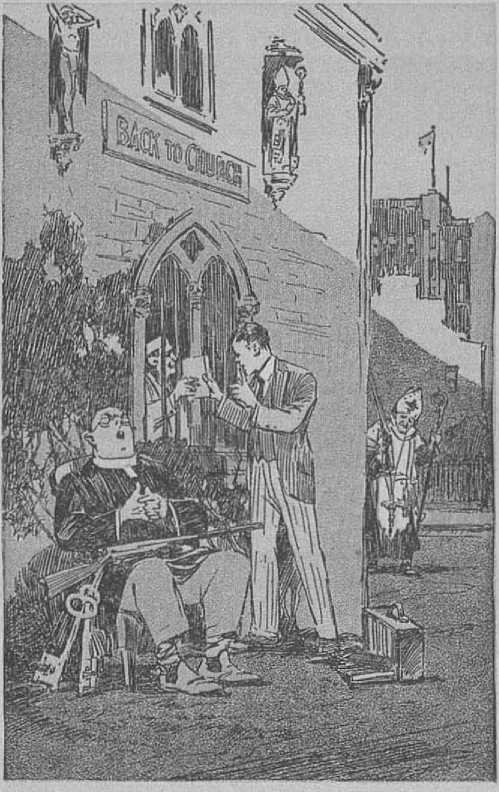
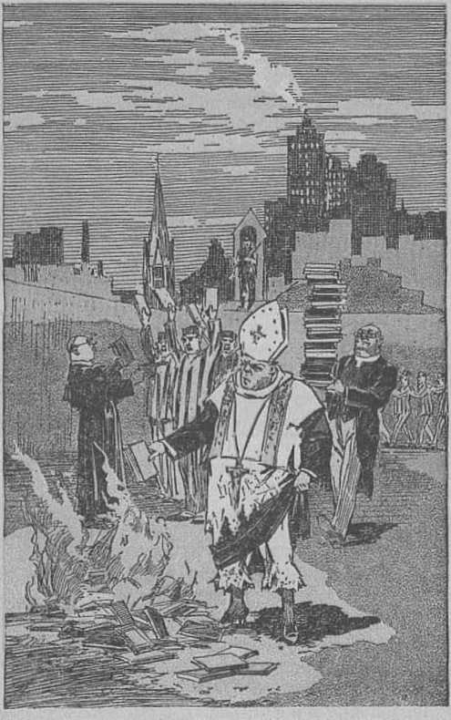

explained in
Seven-Bible Treatises
by
J. F. RUTHERFORD
r T
Page
3 The Creator
12 Spirit Creatures
20 Human Creatures
28 The Christ
36 The Servant
47 The Shepherd
55 vindication
Great confusion of mind prevails as to the reason for the forces now working disaster and sorrow amongst mankind.
This booklet positively shows that the great Being whose "work is perfect” will early make these evil works of man’s enemy to pass. Happy the lot of obedient mankind ever thereafter!
Copyrighted 1934 and Published by
WATCH TOWER BIBLE AND TRACT SOCIETY International Bible Students Association Brooklyn, N. Y., U. S. A. Made in the United States of America
Branch Offices:
London, Magdeburg, Paris, Toronto, Strathfield, Cape Town, Berne, Copenhagen, Stockholm, and other cities.
THE CREATOR is one who creates and gives life to the creature. Yon have never seen a creature that could create and give life to anything. We breathe the air which is necessary for us to have in order to live; we seek the sunshine because it is beneficial to us; ■we gather the fruits and grains and feed upon them because these arc necessary; wo enjoy the beautiful trees and flowers, and daily we are in receipt of numerous benefits; but how much attention is given to the source from which all these things of necessity come to us?
If we are led to believe that all these necessities flow to iis naturally and because we are justly entitled to them we are not likely to give thanks to anyone because we have them. Satan the Devil is the subtle and wily foe of all who love righteousness, and he at all times endeavors to induce men to pursue a wrongful course. One of the methods of the wicked one is to mislead men and to induce them to believe that all the blessings and benefits that are enjoyed by them come by nature and that men have and enjoy them as a matter of right. The very purpose of the wicked one is to keep the people in ignorance of and concerning the Almighty, to
whom men are indebted for all things that they enjoy. In these modern times men who claim to be teachers of the Bible tell the people that all the blessings they enjoy come to them either by nature or by the result of their own efforts. By these means the name and Word of the Creator are defamed and the people are kept in ignorance.
Evil days are now upon the world, and this is well known to all who think. Wickedness has reached a great climax, and the whole world is in distress. In this connection attention is called to the words of the scripture long ago written, and recorded at Ecclesiastes 12:1, to wit: “Remember now thy Creator in the days of thy youth.” Had the name of the great Creator been kept before the people of past generations and from the days of their youth forward there would be far more happiness in the world now. Satan has induced the people to forget their Creator; and to accomplish this he has used men who have fraudulently claimed to be teachers of Christianity. When Christ the great Teacher was on earth he at all times honored his Father, the great Creator, and all followers of Christ who in truth and in fact have served God have done the same thing. There are now on the earth many people of good will who are hungry for the truth, and it is to these I now speak. In this evil day let all such get an understanding of the Creator and learn what blessings flow to the people from him.
Is it true, as many religious teachers and others say, that nature is our creator and brings to us our blessings? Such is wholly untrue^Na-ture is the visible creation of the Creator, and therefore pertains to things of the eartlnJWe know that man is the most intelligent creature on the earth, and yet man cannot create even a blade of grass.JWho, then, is the creator of all things we see"? The Scriptures, which contain the word of truth, answer at Isaiah 40: 28: 'The everlasting God Jehovah is the Creator.’ "In the beginning God created the heaven and the earth/’ (Genesis 1:1) At Psalm 24:1 it is written : (j^The earth is the Lord’s, and the fulness thereof; the world, and they that dwell therein.” That means that nature, that is to say, everything that we see about us in the earth, and the earth itself, was created by Jehovah God. The name "everlasting God” means Creator. It was God who made the mountains and the seas, the rivers and the lakes, and who brought forth the fields and the mighty forests, and made all things of the earth. These are things natural, and hence are called nature. None of these, however, created themselves, but they are the handiwork of God. Honor and praise are not due to the things created, but to Him who created them.
God never made anything that is imperfect. It is written concerning the beasts of the field: "And God made the beast of the earth after his kind, and cattle after their kind, and every thing that ereepcth upon the earth after his kind: and God saw that it was good.” (Genesis 1:25) God created man in his image and likeness, and man was perfect. It is written of God (Deuteronomy 32:4): "He is the Rock, his work is perfect; for all his ways are judgment: a God of truth and without iniquity, just and right is he.” The psalmist puts Giese words in the mouth of those who love righteousness (Psalm 9:1): "I will praise thee, 0 Lord, with my whole heart; I will shew forth all thy marvellous works.” (Psalm 26:7) "That I may publish with the voice of thanksgiving; and tell of all thy wondrous works.” (Psalm 33:4) "For the word qf the Lord is right; and all his works are done in truth.”
REASON FOR IMPERFECTION
In the earth there are many wild and vicious Beasts and deadly serpents. There are innumerable bugs and pests that destroy the grains and vegetables and annoy mankind. There are millions of vicious men who prey upon their fellow creatures. If God is good, who created these? Did the Devil create these evil ones? If not, how can we understand that all the creation of Jehovah God is perfect, as the Scriptures state? The answer to that can be found in the Bible. God did not create anything that was wicked at the time it was created. Concerning the animals the Scriptures read, at Genesis 2:19,20, that God created every beast of the field and every fowl of the air, and brought them before Adam, that he might name them. It was the lower animals and fowls of creation over which Adam was given dominion. He was not given dominion over man. Lucifer was made overlord of all of earth’s creation, including man, and all things under man. Lucifer was perfect in all his ways when created and until he meditated in his heart a rebellion against God. Then his name was changed to Satan, and Devil, and the Devil turned the creatures of earth, including man and beast, against God and into ways of wickedness. All the sorrow and suffering of man is due to sin or the transgression of God’s law, first induced by Satan. This is stated, in Romans 5:12, in these words: "Wherefore, as by one man sin entered into the world, and death by sin; and so death passed upon all men, for that all have sinned.” The great Creator, God, made all things perfect, and it was the wicked one Satan that turned all creation against God and caused them to be imperfect. God could have prevented this, to be sure, but when the Devil challenged Jehovah’s word and name Jehovah permitted the wicked one to go his limit, and God declared that in his own due time he will prove to all creation that he is the only true and almighty One, that his name is Jehovah God, and that his name shall be vindicated.
The pests that have afflicted the farmer, the wild beasts that have destroyed his property, the diseases that have afflicted the bodies of men and caused suffering and death, all are
properly charged against Satan and his allies in wickedness. To redeem man from the results of that great transgression God sent his beloved Son Jesus into the world, and Jesus died upon the tree in the place or stead of the sinner, and thus provided the redemptive price for man. God promised to take away all power of Satan to rule, and to make his beloved Son the righteous ruler of the world. The time has now come when Jehovah has set his King- Christ Jesus upon his throne and the great work of establishing righteousness in the earth has begun. Just before destroying Satan’s organization and his power Jehovah God sends his faithful and true witnesses throughout the land to call the attention of the people to the fact that Jehovah is the Almighty God and that his Word is true; and this he does in order to afford the people an opportunity to know him and to take their stand on his side and thus to be in a position to be spared in the great destruction that shall come upon the world at Armageddon. All people must come to know that Jehovah is the Creator of heaven and earth and the Giver of all blessings. This knowledge is essential in order for them to have an opportunity for life everlasting. Jehovah God’s kingdom under Christ is now here, and immediately following Armageddon the restoration of mankind to human perfection will begin and the obedient ones will be brought back to the state of perfection originally enjoyed by the man whom God created perfect. These great

THE DEVIL CHALLENGES JEHOVAH
Page 7
truths Jehovah foretold by the mouth of all his holy prophets, and the time has now come to understand this prophecy.
Many religious teachers have told the people that God has sent the pests to destroy their crops because of their failure to attend church. Is that true or not? Such a statement or teaching is wholly untrue and a defamation of God’s name. It is Satan the Devil who has caused the trouble to man, and this he does to turn man away from God. When the people know that God is the Most High they will learn that he is love, which means that he is entirely unselfish and that he always does good to those who obey him.
If God did not make the beasts of the field cruel and wicked, what will he do in order to protect man from their ravages at future times ? God gives answer to that question through his prophet Hosea (2:18) in these words: “And in that day will I make a covenant for them with the beasts of the field, and with the fowls of heaven, and with the creeping things of the ground: and I will break the bow, and the sword, and the battle out of the earth, and will make them to lie down safely.” Note the scripture says “in that day”, which term means in the day in which God’s righteous government shall rule the world. Satan and his organization must shortly go down; and when all that wicked influence is removed, then God, according to his promise, will make a covenant with the beasts of the field, the fowls of the air, and all creeping things, and will establish peace between them and man and no more shall they war upon each other. All creation that lives will come to know that Jehovah is God and that he is loving and kind. In further support of this the prophet, at Isaiah 11: 6-9, says: "The wolf also shall dwell with the lamb, and the leopard shall die down with the kid; and the calf, and the young lion, and the failing together; and a little child shall lead them. And the cow and the bear shall feed ; their young ones shall lie down together; and the lion shall eat straw like the ox. And the sucking child shall play on the hole of the asp, and the weaned child shall put his hand on the cockatrice’ den. They shall not hurt nor destroy in all my holy mountain; for the earth shall be full of the knowledge of the Lord, as the waters cover the sea.”
Such will be the result of the government of righteousness which God the great Creator will establish over the world. What I have just stated is true, because the mouth of Jehovah God has declared it. Being true, that information is of greatest importance to the people. Who would want to keep the people in ignorance of these vital truths? The Devil and his agencies, and no one else. I therefore urge upon you the necessity of informing yourselves and that you do not permit yourselves to be turned away from the study of God’s truth because of the misrepresentations of some prejudiced man.
Avail yourselves now of the opportunity to know God, the great Creator of heaven and earth, who will bring to the earth peace, prosperity, happiness and everlasting life. The hooks that Jehovah’s witnesses are bringing to your homes will enable you to find out these truths from the Bible without the aid of any man. Learn of him and give Jehovah God all honor and credit for the truth, and thus magnify his holy name.
GOD, whose name is also Jehovah, is the Creator. All other living things are creatures. Jehovah God is the self-existing One, without beginning and without end, as declared in Psalm 90:2. Since all things aside from Jehovah were created, it follows that Jehovah God is the only being. It is therefore incorrect to speak of men as human "beings”. Men had nothing to do with bringing themselves into existence; hence they are not beings, but creatures.
Jehovah God is that Great Spirit, whom no man has seen or can see; and hence it is properly said that Jehovah is The Spirit Being. A spirit is that which is invisible to human eyes. There are numerous spirit creatures as well as human creatures. Writing by inspiration and authority of Jehovah God Paul states at 1 Corinthians 15: “There is a natural body, and there is a spiritual body.” Natural bodies or creatures are those creatures pertaining to the earth and which are visible to human eyes. Spirit bodies or creatures are those pertaining to things of heaven and are invisible to human eyes. It is incorrect to say that angels have an angelic “nature”; because natural things pertain to the earth and are the visible part of creation. Angels are spirit creatures and the angelic body is spiritual, hence invisible to man. There are only two texts in the Bible that would even seem to indicate that it is proper to speak of spirit or divine nature, and both of those texts are mistranslations. These texts appear at 2 Peter 1: 4 and Hebrews 2:16, of the Authorized Version. Both of these texts are properly rendered in other translations. There is spirit growth, but not spirit nature. Men in their own wisdom use the term “the law of nature”. Such is Scriptural-ly incorrect. The term nature always pertains to God’s visible creation; hence we correctly say “the law which God has made to govern nature or natural things, that is to say, the things that pertain to the earth, which are created by Jehovah and are visible to human eyes”.
Satan is a subtle and wily foe of man. His name “Serpent” means deceiver, and he has misled and deceived men into teaching error in order to turn them away from God. Tear’ ers of the Bible deceived by the enemy Satan have for centuries taught that Jesus and God are the same 'being’, and such teaching has led to great confusion. The Scriptures show that Jesus was the beginning of creation and was originally called the Logos. He was created a spirit, and, of course, was invisible to earthly creatures. In the Scriptures it is written concerning the Logos, who is also called Jesus, that “in the beginning was the Logos, and the Logos was with The God, and the Logos was a god”. (John 1:1, Diaglott, interlinear) At Revelation 3:14 it is written that Jesus was “the beginning of the creation of God”.
Jehovah God made his first creature, the Logos, the active agent by whom he thereafter created all other things or creatures that were created. In John 1:3 it is written: “All things were made by him.” At Colossians 1:15-17 the divine record concerning Jesus says: “Who is the image of the invisible God, the firstborn of every creature: for by him were all things created, that are in heaven, and that are in earth, visible and invisible, whether they be thrones, or dominions, or principalities, or powers: all things were created by him, and for him: and he is before all things, and by him all things consist.” That does not mean that Jesus, to the exclusion of Jehovah God, created all things, but that he did create all things at the command of and by authority of Jehovah God, At Ephesians 3: 9 the record is, “God ... created all things by Jesus.”
No living creature can exist without a body or organism; hence, it is written in the Scriptures, “There is a natural body, and there is a spiritual body.’’ The natural body is of flesh and blood and visible to human eyes. It has not pleased God to reveal to man what substance composes the spirit body; hence, it is written, at 1 John 3: 2, ‘it doth not yet appear to man what a spirit body is.’
Lucifer was a spirit creature of Jehovah created by him through his agent the Logos. Lucifer was a beautiful creature and possessed groat knowledge or light concerning Jehovah’s purposes. Originally he was an officer in God’s organization. Because of his willful rebellion against God Lucifer was profaned or cast out of God’s organization. At that time Jehovah God gave him four separate and distinct names, each one of which indicates the course of action this wicked one has pursued. These four names are Satan, Serpent, Dragon, and Devil.
Spirit creatures in the realm of Jehovah are called cherubim, which literally means spirit creatures appointed to guard certain interests of Jehovah’s organization. The name, therefore, specifically applies to an office filled by a spirit creature. When Lucifer was given control over man in Eden and set to safeguard man and the tilings of Eden he is spoken of in the Scriptures as “the anointed cherub that eovereth”, meaning the officially appointed cherub to guard certain interests. When man was expelled from Eden and Satan was demoted, God placed other spirit creatures on guard to keep the way to the tree of life, as stated in Genesis 3: 24.
Seraphim is a name also applied to spirit creatures. These creatures are assigned to specific duties in the organization of Jehovah, and this is shown particularly at the prophecy of Isaiah six. The seraphim are the bearers of light, which reflect the glory of the great Jehovah God and his duly constituted Ruler of the universe.
In God’s universal organization there are myriads of angelic creatures. These were created by Jehovah by and through his beloved Son the Logos. At Psalm 104 it is written: “Who mak-eth his angels spirits, his ministers a flaming fire.” Angels are spirit messengers commissioned to perform specific service to the Lord. Jesus stated that these angels are always employed by and at all times have access to the presence of Jehovah according to his will. They bear his messages and carry out his orders. The Scriptures definitely disclose that angels of Jehovah, under his prescribed rules, may appear in a human organism, which body or organism is not spiritual, but is provided by Jehovah for the occasion. This materialization God has permitted in times'past, in order to establish the faith of men. Abraham was a man devoted to Jehovah, and on an occasion God sent Abraham a message by his angels, who appeared in human form and spoke to Abraham, (Genesis
22:11) Many angels followed Satan in his wickedness, and these have often communicated with human creatures who disregard God’s Word. Such is the real source of messages which, spiritists claim to receive from the spirit world.
Concerning Jesus, it is written in the Scriptures that he was first a spirit creature, and when God sent him to earth to become the Savior of men ‘he was made flesh, or human, and dwelt amongst men'. As a man he died, and three days thereafter God raised him up out of death a spirit. At 1 Peter 3:18 it is written he was put to death in the flesh but made alive by the spirit. God exalted Jesus Christ the spirit creature, the divine, to the highest place in heaven and made him the head over all of his creation. At Revelation 1:18 he says: “I am lie that . . . was dead; and, behold, I am alive for evermore.” When on earth with his disciples Jesus told them that he was going away and would come again. He told them and his other followers to watch and pray for his coming and his kingdom. He further said that at that time would come the judgment of the world.
On another occasion the Scriptural proof has been submitted to you, and which also appears in the booklet concerning our Lord’s return, that Christ Jesus has returned, agreeable to his promise. Because he is a spirit he is and always will be invisible to human eyes, but that in no wise hinders him in carrying out the purposes of Jehovah. He now comes as the exalted Ruler and King of the universe. His first work is that of gathering unto himself his faithful followers and judging them according to the will of God. He then proceeds to judge the nations of the earth. Appearing at the temple of Jehovah for judgment he is accompanied by an innumerable company of holy angels who carry out his orders. Of this it is written, in Matthew 25:31, 32: “When the Son of man shall come in his glory, and all the holy angels with him, then shall he sit upon the throne of his glory; and before him shall be gathered all nations; and he shall separate them one from another, as a shepherd divideth his sheep from the goats.” The separating and judgment work is already begun and is in progress. Jesus declared that when this judgment would begin there would be ‘upon earth distress of nations, with perplexity, and men’s hearts failing them for fear of what they see coming upon the world’. To this exact condition all bear witness on this very day,
Christ Jesus, the great Spirit, is the Judge of the world, and in due time will execute the judgments which Jehovah God has caused to be written. Associated with him at the judgment are his faithful apostles and others who died fully devoted to God and who have been raised out of death spirit creatures. Now upon earth there is also a little company of faithful ones to whom Jehovah God has given the name “Jehovah’s witnesses”, and these have some work to do on earth in connection with the judgment. Their work is to notify the people by calling their attention to the truth, as set forth in the Bible, and which is now made plainly to appear in the light of present-day events. Their chief work is to proclaim the name and work of Jehovah. Concerning this it is written, in Psalm 149: 6: “Let the high praises of God be in their mouth, and a two-edged sword in their hand.” The ‘’two-edged sword” here mentioned is God’s Word of truth which his witnesses are now commanded to use. They now come to your homes with the message of truth; and I bid you to receive the message, not as a message from man, because it is not man’s message, but as the great message of truth from Jehovah God. The old world over which Satan rules has come to an end, and God's kingdom, under his groat spirit King Christ Jesus, is here. He will vindicate God’s Word and name.
The most important question now before all creation is this: Who is the Supreme One, whom all creation must worship and serve ? The people must have knowledge in order to determine for themselves what is the correct answer. Satan, the wicked spirit, for centuries has kept the people in darkness as to the truth, and thus has defamed the name of Jehovah. The time is now come when that great question in dispute must be for ever settled. For a long while God has caused the truth to be preached in the earth, that men might have an opportunity to learn; and now at the end of the world Jehovah has selected a people for himself to be witnesses to his name, and these he has commanded to go and tell the truth to the people. For this reason it is written concerning them, at 1 Corinthians 4:9, margin, that they are a theater or witness both to men and to angels. All spirit creatures must now take their stand on one side or the other of the great controversy. All men must choose whom they will serve. That is the reason why there is such a strenuous effort made to inform the people of this time just what the Scriptures teach concerning God. Jehovah declares that he will preserve those who love him and will destroy all the wicked. The net result will be that all invisible or heavenly creatures that live will be pure and holy and for ever for Jehovah, and that all men who live must be devoted to Jehovah. At the end the condition will obtain that is described in the one hundred and fiftieth Psalm, to wit: 'Everything that breathes will praise Jehovah.’
THE EARTH is the terrestrial body upon which men reside and which is somewhat familiar to man. The earth is hung in space and upon nothing that is tangible to man. It bears up great mountain ranges, tremendous bodies of water, and a few things which man has built upon it out of material which Jehovah made. The earth is one of the planets of the solar system. When a day becomes dark by reason of an eclipse of the sun there come forward a few self-constituted “wise” men and attempt to tell the people how “nature” made the earth and the sun and provided these wise men to explain it. These so-called “scientists” have much to say about the greatness of themselves and their work, but never one word concerning the Creator of the earth and the sun. By their conduct, as well as by their words, they dishonor the Creator. In their hearts they say, “There is no God, but great are we men called scientists.” Recently one of these wiseacres in the land of “Christendom” said: “We scientists are the only competent ones to rule the world, and the world should be ruled by scientists.” These so-called "wise” men claim to be teachers of the Bible, but they entirely ignore it and teach their own wisdom and thus lead men further into darkness. Wliat shall the people do? The answer is found in the Word of God, which is given for man’s instruction. Jesus declared, as there recorded : “Sanctify them through thy truth : thy word is truth.” Concerning the earth, its creation as a place for the habitation of man, it is written, in Psalm 24:1: “The earth is the Lord’s, and the fulness thereof.” At Job 26:7: “[God] stretcheth out the north over the empty place, and hangeth the earth upon nothing.” Psalm 104:1, 5, 6: “Bless the Lord, 0 my soul. 0 Lord my God, thou art very great; thou art clothed with honour and majesty. Who laid the foundations of the earth, that it should not be removed for ever. Thou coveredst it with the deep as with a garment; the waters stood above the mountains.” Nature had nothing to do with the creation of the earth. Nature means the creation of Jehovah God of things pertaining to the earth and which are visible to human eyes. The inspired Word of God, at Genesis, says: ‘Tn the beginning God created the heaven and the earth.” When created the earth was void of vegetation or living creatures. Gradually God developed the earth, and this he did over a period of many thousands of years before the creation of any living creature upon the earth. The Scriptural proof of these points is set forth in detail in the book called Creation, published by the Watch Tower Society. You should avail yourselves of an opportunity of learning what the Bible says upon these great questions.
The earth shall never be destroyed, because God has so announced, in Ecclesiastes 1:4, to wit: “The earth abideth for ever.” Men have foolishly taught that the earth is merely the beginning of man and within a short time men die and go on to another realm. Such conclusion is the result of Satan’s falsehood. Why did God create this earth? and why has he brought it up to its present wonderful and beautiful condition? Jehovah’s prophet, at Isaiah 45:12, 18, answers that question in these words: “I have made the earth, and created man upon it; I, even ray hands, have stretched out the heavens, and all their host have I commanded. . . . For thus saith the Lord that created the heavens: God himself that formed the earth and made it; he hath established it, he created it not in vain, he formed it to be inhabited; I am the Lord, and there is none else.” The announced purpose of Jehovah is that he created the earth to be inhabited by man; and it is .certain that God’s purpose will he fully carried out, because he has1 said in his Word: “I have purposed it, I will also do it.”—Isaiah 46: II.
Is man strictly and entirely a human creature, or is he part human and part spirit? Men expressing their own wisdom say: “Man is part human and part divine.” But their conclusion is supported neither by reason nor by the Word of God. In the scripture at 1 Corinthians 15: 47 it is written: “Man is of the earth, earthy.” Further supporting this conclusion the Bible states the manner in which, and material out of which, God created man, in these words: “And the Lord God formed man of the dust of the gr ound, and breathed into his nostrils the breath of life; and man became a living soul.”—Genesis 2:7.
Some insist that it is the soul of man that is spirit or divine. Their contention, however, is wholly unsupported by the truth. The Scriptures describe other animals, of the lower order, as souls. The word soul does not mean some indescribable thing, but it is a name applied to all creatures that breathe the air. God did not make the man and then put a soul in him; but he formed the body out of the elements of the earth and then breathed into the nostrils the breath that living creatures breathe, and there resulted a moving, breathing, living creature which God calls a soul or man.
Satan is responsible for the doctrine that man has an immortal soul. His purpose has been and is to defame God the Creator and to turn man away from the Most High. An immortal thing does not die. God in his Word said to the man soul: ‘In the day you sin you shall surely die’; and again, he stated: “The soul that sinneth, it shall die.” (Ezekiel 18:4) Satan said to man: ‘God is a liar; ye shall surely not die.’ Satan therefore induced man to believe that the soul is immortal, and thus he defamed the word and the name of Jehovah God.
Satan is a subtle and wily foe, and he causes men to frame arguments by which they convince themselves and deceive others concerning Jehovah and his creation. It is written in the Bible that God created man in his own image and likeness. That could not possibly mean that man was made like God in body, because God is the great Spirit, and the Bible plainly says that God has never revealed to man what a spirit body is like. (1 John 3: 2) What, then, is the meaning of the words of God concerning the making of man in his image and likeness? Image means a representation of a reality or something appearing in a representative capacity, Jehovah God is the great Ruler over all creation. If the creature ia given dominion or rulership over some part of creation, to that extent the creature is in the image of God. In Genesis it is written God said to man: ‘Have dominion over the living creatures of earth.’ In other words, God made the perfect man to have dominion over the animals of a lower order, but not over mankind. Thus he made man in his image.
Likeness means that which resembles. The attributes of Jehovah God are wisdom, justice, love and power. A perfect man that obeyed God is properly said to have wisdom. Man is commanded to do justice and is endowed with the faculty of knowing what is just and right. Man is endowed with the faculty of love, which means unselfish devotion to righteousness. Ho is also endowed with power, because he is enabled to do and perform certain things. Thus he is made in the likeness of Jehovah. There is nothing in the language of the Scriptures indicating that man possesses in him an immortal spark that cannot die. On the contrary, the Scriptures, at 1 Timothy 6:16, say God only hath immortality. Immortality is granted to a creature only after that creature proves himself wholly and completely devoted to Jehovah under the most severe test. For this reason the Scriptures admonish the followers of Christ Jesus to faithful service and to give attention thus to seek immortality. This proof will be found in Romans
2: 7. That immortality is a great reward given only to Christ Jesus and his faithful body members is shown by the words at 1 Corinthians 15: 50-54, also at Revelation 2; 10. The Scriptures prove beyond all doubt that man is a human creature and not spiritual or divine.
HOME
Sickness, suffering and death, to which humankind long has been subjected, are the result of transgression of God’s law by the first man Adam and which result descended upon all his offspring by inheritance. God has provided redemption and deliverance of mankind by and through the sacrifice of his beloved Son Christ Jesus. That sacrificial work of Christ Jesus has been accomplished. The kingdom of God under Christ is now here. Under the reign of Christ men will be given release from the bondage of death and be brought to a full and accurate knowledge of the truth in order that they may choose .the way to life or disobey and take the consequences. In proof of this it is written, in Isaiah 25:7,8: “He will destroy in this [kingdom] the face of the covering cast over all people, and the vail that is spread over all nations. Jie will swallow up death in victory,” Isaiah 11:9: “The earth shall be full of the knowledge of the Lord, as the waters cover the sea.”
The human race never had spiritual life, and, of course, no man can lose spiritual life or the right to spiritual life. By reason of sin man lost the right to life on the earth for ever as a human creature. This right Christ Jesus purchased and this same right Christ Jesus, the great King and Deliverer, will give to all men who under his reign are obedient to his law. The opportunity of the human race is therefore by and through Jehovah’s kingdom under Christ, who is the Savior of mankind. The people must first be brought to a knowledge of Jehovah and his truth. The destruction of Satan’s great organization will convince all that Jehovah is the only true God. That destruction will come within a very short time. Then, as the Scriptures declare, will follow the work of cleaning up the earth, the establishment of peace and prosperity amongst men, and life will be given to all who obey the righteous rule of the mighty Ruler of the universe.
These truths arc of the greatest importance to the people just now. Jehovah has commanded his witnesses to go to the homes of the people and to tell them these truths and to call their attention to the fuller statement thereof as set forth in the books published for the explanation and understanding of the Bible. The work of such is in fact the preaching of the gospel of the kingdom. The Lord declares this good news or gospel must be given to the people immediately preceding the great battle of Armageddon. That is the reason why faithful men and women are daily calling upon the people and directing their attention to these truths. The people must have this information if they will live, and Jehovah in his loving-kindness is causing the information to be brought to them. Bear in mind that man is a human creature, that his eternal home, if he is obedient, will be upon the earth; that God through Christ Jesus has provided such blessings, and that shortly the great Savior of man will begin the reconstruction of the world and the restoration of all obedient creatures to perfect life and happiness. This work of the Lord will be a complete vindication of Jehovah’s word and name and proof that he is the source of life and blessings, and the Giver of everything that is perfect and good. Know Jehovah God and live.
IN BRIEF, THE CHRIST means the anointed. The word Messiah means the same thing. To anoint means to commission a creature to fill and perform the duties of an office. The Christ of God is the One duly appointed, commissioned and anointed to the office of chief representative and executive officer of Jehovah God. He is the rightful King of the world carrying out the purposes of Jehovah. (Revelation 11:15; 12:10) “Christ” is one of the titles that Jehovah has given his beloved Son, whom he has appointed to the highest position in the universe.
At the time of the rebellion of Lucifer and the exclusion of man from Eden Jehovah God entered judgment against Lucifer, thereafter called Satan the Devil, and also against man. At the same time God gave his word that he would bring forth a 'seed of the woman’ which should rule the world in righteousness. The “woman” there mentioned symbolically stands for God’s universal organization, while the “seed” means that Jehovah God, by his organization and power, brings into existence and official operation his duly commissioned ruler. It is written, in Galatians 3; 16, that this seed promised by Jehovah is Christ, the mighty Son of Jehovah God, who bears a number of other titles. Among such titles are the Logos, Jesus, “The Faithful and True Witness,” and the Judge of the world. When God sent his beloved Son to the earth as a man he gave him the name and title Jesus because he is the Redeemer and Savior of mankind. When Jesus was immersed in the Jordan Jehovah caused a voice to announce in the hearing of witnesses the words: “This is ray beloved Son, in whom I am well pleased.” Immediately after his temptation in the wilderness Jesus was anointed by Jehovah to be the King of the world, and from that time forward he bears the title Jesus Christ. For three and one-half years thereafter Jesus bore testimony before the peoples of Israel concerning Jehovah God and his purposes. He said that he came to earth to bear witness to the truth. (John 18: 37) Always upholding and magnifying the name of Jehovah his Father, and bearing testimony to the truth, Jesus is designated, in Revelation three, “the faithful and true witness.” God raised up Jesus Christ from the dead and exalted him to heaven and gave him a name and a position far above all creation, ^md from that time and for evermore Christ Jesus is the chief executive officer of Jehovah God.
Although Christ Jesus was the King of the world and entitled to rule at the time be ascended into heaven, yet it was not then Jehovah’s due time for him to begin his reign; hence it is written of him, in Psalm 110:1, that God commanded that Christ Jesus should wait until due time for him to begin his rule of the world. This is in exact harmony with what Christ Jesus said to his disciples while on the earth. He told them that he was going away to receive for himself a kingdom and that he would come again and receive unto himself those faithfully devoted to God and his kingdom. That promise must be fulfilled.—Luke 19:12; John 14:1-3.
When Jesus was with his disciples he told them that God his Father had given him the kingdom of the world, and he then and there invited those faithful disciples to share with him that kingdom. (Luke 22: 28-30) This was exactly in harmony with the will of Jehovah God, who declares in his Word that Jesus shall have associated with him in his kingdom 144,000 others taken from amongst men. (Revelation
7:4; 20:4) During the period from the resurrection and ascension of Jesus and until the setting up of his kingdom God has been taking out from amongst men the 144,000 to be witnesses to his name. The chief ones amongst the 144,000 are the twelve apostles of Christ Jesus. This company of 144,000 is designated as the “body of Christ”, meaning those who are made members of his immediate organization. (Ephesians 1: 22, 23) In Ephesians two it is written of these faithful ones: “Ye are ... of the household of God; and are built upon the foundation of the apostles and prophets, Jesus Christ himself being the chief corner stone; in whom all the building, fitly framed together, groweth unto an holy temple in the Lord.” Further identifying this class the words recorded at Galatians 3:27, 29 are: “For as many of you as have been baptized into Christ have put on Christ. And if ye be Christ’s, then arc ye Abraham's seed, and heirs according to the promise.”
No man can make himself a member of the body of Christ. That great honor is a gift from God. The man, however, must fully and completely devote himself to God. After full consecration the man is called or invited to participate in the kingdom. If he responds and proves himself faithful to God he is chosen and anointed, which means that he is set in the body of Christ. To such it is written, in Revelation 2:10: “Bo thou faithful unto death, and I will give thee a crown of life.” During the past 1900
years God has not been attempting to convert the world of mankind, as many have foolishly stated. He has been taking out a people for his name, and those who prove faithful he will make members of The Christ or official family of Jehovah. This official family of Jehovah is called the house or temple of God; not a temple or building made with hands, but an organization prepared and used by Jehovah for his purposes.
Can those who are selected by Jehovah to be a part of his Christ participate in the politics of this world, as the clergymen do? The Scriptures answer emphatically, No. It is written, in 2 Corinthians 6:15-18 (Weymouth) : 'What harmony can exist between Christ and Belial [the world organization] ? or what participation has a believer witli an unbeliever? And what compact has the temple of God with idols? for we are the temple of the living God; as God has said, I will dwell among them, and hold intercourse with them, and will be their God, and they shall be my people.’ What, then, are the duties and obligations laid upon those who are called to be members of The Christ? The answer is found at 2 Corinthians 5: 20, in these words: 'Now we are the ambassadors of Christ.’ An ambassador is one who bears a message as a representative of the kingdom or government. As the true and faithful followers of Christ Jesus these must bear witness as long as they are on earth. At Hebrews 3:6 it is stated that Christ Jesus is the Son of God and the Head over his house, 'of which house are we if we hold fast the beginning of our confidence and rejoicing of our hope firm unto the end.’
As Jesus was and is the faithful and true witness of Jehovah, and as the body members are called to follow in his steps, each and every one whom Jehovah finally approves must be a faithful witness unto God and his kingdom. Now the kingdom has come, and the time when the great question must be settled as to who is supreme. To those called to the kingdom, therefore, God says: “Ye are my witnesses . . . that I am God. ... I have put my words in thy mouth.” (Isaiah ' 43:12; 51:16) Every one of these must be a preacher of the good news or gospel of the kingdom. At 1 Corinthians 9:16 the faithful apostle says: “Necessity is laid upon me; yea, woe is unto me, if I preach not the gospel!”
The peoples of earth must be told that Jehovah is God, and that his kingdom has come; therefore the faithful are commanded, at Matthew 24, in these words: “This gospel of the kingdom shall be preached in all the world for a witness unto all nations; and then shall the end come,” For this reason, and in obedience to the commandments of the Lord, faithful men and women who have devoted themselves to God are now going from house to house telling the people concerning Jehovah and his kingdom under his Christ. They preach the gospel by exhibiting the message of the kingdom in printed form that the people may learn the truth. They are not doing this for commercial purposes, but are doing so because they must be obedient to God and prove faithful unto him. The purpose of giving this information to the people now is that those who desire to know and to do what is right may see which is the proper course for them to take.
The decree or judgment of Jehovah heretofore written in his Word says that Christ Jesus, the great executive officer of Jehovah shall soon completely wreck Satan’s organization that the peoples of the world may be released from oppression and thraldom and that Jehovah’s name may be vindicated. It is just preceding that destructive work that the faithful followers of Christ Jesus, who are witnesses of Jehovah, must go among the people and give notice of the approaching great battle. This they are doing now.
In brief, the gospel message is this: That Christ Jesus by his own lifeblood purchased the world; that his righteous rule of the world will result beneficially to all who desire to do and who strive to do right; that all the people must be brought to a knowledge of these truths, and those who do obey the law of God’s kingdom will be granted everlasting life and blessings of peace, prosperity and happiness, and their sorrow and suffering will cease, and there shall be no more death; and the greatest amongst these truths is that all these blessings proceed from Jehovah God.
There could not possibly result any personal or selfish gain to me whether the people hear or do not hear this message. God has commanded that the message of the truth must be given, and all who love him and serve him faithfully must carry this message to the people; hence it is written, in Revelation 22:17: ‘Let him that heareth say, Come and learn the truth.’ If you believe what is written in the Scriptures you must believe in God and his kingdom and that this is the hope of the world. Therefore I urge upon you that you take advantage of the groat privilege granted unto you by the Lord by reason of having heard the truth and then go and tell it to others, that they may bo benefited by this knowledge and may have an opportunity to render themselves unto obedience to Jehovah and his kingdom under Christ and receive the blessings thereof.
The most important work ever done on earth must bo done by Christ; and that work is now beginning. Christ Jesus, the mighty Son of Jehovah, by his own blood has bought the human race. Now he assumes his high office as Ruler of the world. When the people know what "this means to them they will hail his rule with great gladness. Everywhere today the people are oppressed. In a world of material plenty and where there is much work to be done millions are without employment and are suffering for the necessities of life. Misrule and wickedness in high places greatly burden the people. Those who do labor and produce something are unable to obtain adequate returns therefor. Added to all these things the human race suffers sickness and death. The reign of Christ will lift all these burdens from the backs of manldnd. As executive officer of Jehovah he will shortly destroy the wicked rulers and their power. Then the earth shall be cleaned up and righteous men as the visible representatives of the Lord will govern the people in righteousness. Every man will then have a fair show. The children.will be granted the opportunity for the blessings of life. Peace and prosperity shall come to stay, and all who render themselves in obedience to the laws of Christ shall be restored to perfect manhood and dwell together on earth for ever in peace. All these blessings proceed by Christ through the great Jehovah G od.
IN THE organization of this unrighteous world a servant is placed on a low level. In God’s organization, which is righteous, exactly the reverse is true. When Jesus was on earth he said to his disciples: 'The rulers of this world exercise authority over servants; but it shall not be so among you: but whosoever will be great among you, let him be your minister; and whosoever will be chief among you, let him be your servant; even as the Son of man came not to be ministered unto, hut to minister, and to give his life a ransom for many.’—Matthew 20:25-28.
In this worldly organization the majority of men are even ashamed to speak the name of Jehovah God and of his Christ. If it becomes necessary for a lawyer in the courtroom to mention the name of God he does so in an undertone and in an apologetic manner. This condition exists because this world is Satan’s organization over which the wicked one rules and he has deliberately turned the minds of men away from God. Now is the time when the name of Jehovah must be placed before the people in the proper light and for their good. It is the greatest privilege to know and to serve Jehovah God.
In Jehovah’s organization the name of Jehovah is honored above all. The servant is honored far above those who do not serve. The Lord Jesus Christ, the great and glorious Son of Jehovah God, is the servant of the Most High. Concerning him Jehovah caused his prophet to write, at Isaiah 42:1: 'Behold my servant, whom I uphold, mine elect, in whom my soul delighteth; I have put my spirit upon him; he shall bring forth justice to the nations.’ When Jesus was on earth he cpioted this prophecy and applied it to himself, as shown at Matthew 12:18. What Jesus did when he was on earth his true followers now must and will do likewise.
Note that Jesus said, at John 5:30: “I can of mine own self do nothing; as I hear, I judge: and my judgment is just; because I seek not mine own will, hut the will of the Father which hath sent me.” That means that he was so absolutely and completely in harmony with God his Father that he could and would do only that which was pleasing to his Father. Ue had the ability to take a different course, but that he refused to do. Jesus Christ at all times delighted to do the will of God and therefore faithfully served God. The fact that he was anointed as Jehovah’s King of the world did not change his position towards Jehovah as a servant. He continued to serve and to faithfully perform the duties of the elect servant, and for that reason Jehovah says to all who will hear, ‘Behold my servant, in whom I delight.’
When Jesus the King stood before Pilate he said: ‘I am the King; to this end was I born, and for this cause came I into the world, that I should bear witness to the truth. Every one that is of the truth heareth my voice.’ Since Jesus is the elect servant of Jehovah God, it follows that every one who is of the truth must he a servant of the Most High. In modern times men occupy pulpits in the buildings called “churches” and make the pretense of teaching the Word of God, but they refuse to be servants of God. Arrogantly such men claim to possess the power and authority to rule over the people and tell them what they shall do. They oppose and persecute humble men and women who are diligently trying to serve God, and thus as opposers they oppose the kingdom of God. What, then, is the proper duty laid upon those whom God calls into his organization ?
At the ninteenth chapter of Luke is recorded a parable spoken by Jesus which gives answer to this question. Jesus Christ described himself as a nobleman going away to receive a kingdom and to return, and in his absence he committed to his servants all of his interests on the earth. He then shows that many who professed to be his followers will refuse to have him as their King but arrogate to themselves power and authority, and that such would be the prevailing condition at the time of his return. You who have taken note of the present conditions know that the facts of today exactly fit that part of the parable. The so-called “Christian church” no longer obeys the commandments of the Lord. These the Lord finds unfaithful at his coming. Then the Lord in that parable speaks of and to those who have been faithful in keeping his commandments (Luke 19:17): “Well, thou good servant: because thou hast been faithful in a very little, have thou authority over ten cities.”
The second coming of Christ and his kingdom has for centuries been the great event to which his true followers have looked forward. To those who have been diligent in showing faithfulness Jesus said, at Matthew 24: 45, 47: “Who then is a faithful and wise servant, whom his lord
hath made ruler over his household, to give them meat in due season? Verily I say unto you, that he shall make him ruler over all his goods.” The word “goods” here means the interests of the Lord’s kingdom, which interests consist of giving faithful testimony to the truth.
Those who are found faithful Jehovah makes members of his royal house, and hence these become a part of The Christ. Jesus Christ being the elect servant of God, it follows, then, that all who are made members of Jehovah’s house are also counted in as a part of the elect servant of Jehovah. This royal house is also called the temple of God, and the prophet authoritatively wrote, “In his temple doth every one speak of his glory.” (Psalm 29: 9) It follows that everyone who is of the house of God is a part of the servant and every servant will delight to magnify the name of the Most High.
The kingdom has now come, and it is written that the Lord would have upon earth at this time some who faithfully and truly serve him. Of what, then, does the service of such consist? The Scriptures answer that each one of these who will be a servant must be a witness to the truth. Just now there is before the minds of all creatures the greatest question for determination, which question is, Who is the Almighty God? The people must have some information upon this question to enable them to decide for themselves what is the proper answer. To those who are the faithful followers of Christ Jesus
Jehovah now says: 'Ye are my witnesses, and my servant whom I have chosen, that ye may bear witness that I am God.’ These are the ones whom God has taken out from amongst men to bo witnesses to his name, and the only possible way for them to be faithful unto God is to continue to be witnesses to the truth of and concerning God and his kingdom. This work of giving testimony to the people is not for God's benefit; but it is for the benefit of the people, that they may have an opportunity to know who is the Almighty and then take their stand on the side of righteousness if they would live.
Practically all the world is in darkness or ignorance concerning the truth of God’s Word, and this is due to the wicked influence of Satan, which fact is plainly stated at 2 Corinthians 4. In the worldly church organizations there are many persons who are of good will and who desire to know the truth but who because of fear of their leaders are held as prisoners in these organizations. Nov/ note what Jehovah God has said to his servant as to what his servant must do, to wit (Isaiah 42:6-8): “I the Lord have called thee in righteousness, and will hold thine hand, and will keep thee, and give thee for a covenant of the people, for a light of the [nations] ; to open the blind eyes, to bring out the prisoners from the prison, and them that sit in darkness out of the prison house. I am the Lord; that is my name; and my glory will I not give to another, neither my praise to graven images.”
Thus Jehovah lays upon his servant the duty and obligation to carry the truth to the people, that their eyes of understanding may be opened. They are to give testimony that those who are held as prisoners in the religious organizations may understand the truth and the way of escape. The prison keepers in those institutions tell their congregations to refuse to look into the books that explain the Bible, and even advise the burning of such books. Let the people decide for themselves what they want to do. This they can decide only after having learned what the Scriptures teach. Jehovah is sending his witnesses from house to house amongst the people to so inform them concerning him and his kingdom, and this he gives to his witnesses as a privilege to serve him.
The Scriptures refer to Satan as the prince of darkness who by various means keeps the people in ignorance of the truth. Satan knows that his time is short before the great battle of Armageddon, and hence he is desperately attempting to turn all men into darkness and from God. Never in the history of the world was there a time of greater darkness than now, because there are so many who claim to teach the Bible but who teach exactly contrary thereto. This is in exact keeping with the Scriptural statement at Isaiah 60:1, which applies at the present time and in which the Lord says to the servant class: "Arise, shine; for thy light is come, and the glory of the Lord is risen upon thee.”
Regardless of all persecution and opposition let Jehovah’s witnesses take courage, he glad and rejoice that they are granted the high privilege of being the servant of the Most High and permitted to go throughout the land bearing the message of truth of and concerning God and his kingdom. The mere fact that men who claim to be preachers of the Bible are bitterly opposing the message of the truth and those who bear it to the people should cause the people to take notice that the message brought to them is of great importance. When these witnesses come to your door and exhibit to you books explaining the Scriptures, bear in mind that this is not a message from man. These books merely call your attention to the great truths found in the Word of God and show you where to find the proof and thus enable you to interpret the present-day events. You behold the great distress and perplexity in the world, which is constantly increasing. The Word of God makes it clear why these conditions exist. You are privileged to live in a land where reading is a common thing, and you can read, understand, and decide for yourself. These servants of God are bringing to you Jehovah’s message, and to receive it you will benefit thereby. The elect servant of Jehovah, Christ the Lord, is now upon his throne. His kingdom has begun. It is of the most vital importance to you that you learn
PRISON KEEPERS ADVISE BOOK-BURNING Page 43
these truths and know that Jehovah is the only true God and your only means of relief and blessings.
To be the servant of God is the most honorable position the creature can enjoy. Jehovah himself says that he will give this glory and honor only to those composing the faithful members of Christ. You may be sure, then, that men who claim to preach God’s Word and who then deny the truth thereof and His kingdom blessings, such men are not the servants of God, hut are serving themselves and the enemies of God. You will find the true servants of God happy to give Jehovah all credit for the truth and the blessings that flow therefrom. As servants they come to you that you may be afforded an opportunity to know the truth of God’s Word, and this favor to you is from Jehovah. You may find it hard to buy food for three meals each day, but you will be far better off and much happier to do on two meals per day, or even less, if your mind is instructed concerning the blessings that God will shortly minister to those who obey and serve him.
You have been refreshed by the foregoing. Even greater blessings will be yours reading the beautiful bound books by Judge Rutherford, 364 pages each. Send to The Watch Tower for free booklet concerning same.
A SHEPHERD is one who tends to and feeds a flock of sheep. Jehovah is the great Shepherd, and he speaks of those who arc in a covenant, with him and devoted to him as his dock of sheep. Christ Jesus is the chief Shepherd, and is therefore next to Jehovah the great Shepherd. Jesus addressed his faithful disciples as his sheep because they had been given to him by his Father. (John 10:11; 17:6) The faithful apostles of Christ Jesus were made by him undershepherds oi’ pastors, and it was their duty to serve the flock of God. Speaking of his covenant people on earth Jehovah said, at Jeremiah 3:15: “And I will give you pastors [shepherds] according to mine heart, which shall feed you with knowledge and understanding.” The Lord laid upon the more mature men or elders the obligation to feed or instruct his people with a knowledge and understanding of his purpose as set forth in the Scriptures.
From the day of the apostles till now there have been amongst the people of God ambitious men. Such men have fallen easy victims to the wiles of Satan the enemy. God’s covenant people on earth have been commissioned to represent Jehovah. These have been the special targets to be assaulted by Satan the Devil, even as the Lord foretold. At the time Jesus invited his
disciples to share with him in the kingdom he said to them: “Simon, I tell you that Satan has obtained permission to have all of you to sift as wheat is sifted.” (Luke 22: 31, Weymouth) This and other scriptures show that Satan attacks every one who agrees to serve Jehovah God; and ambitious men readily yield to his influence. The entire history of the so-called “Christian church” shows that Satan has wrought havoc with many who have started in the way to serve God. To be sure, God knew that such would be the result, and he foretold the same by and through his prophets.
Israel is a name used in the Scriptures and applied to the covenant people of God. It is expressly written that the things happening to natural Israel foreshadowed like things to come to pass upon "Christendom”.
God caused his prophet Ezekiel to write concerning the shepherds of his covenant people, and which prophecy applies to “Christendom” at the present time. To Israel he said (Ezekiel 34: 2):’ "Prophesy against the shepherds of Israel [‘Christendom’], prophesy, and say unto them, Thus saith the Lord God unto the shepherds, Woe be to the shepherds of Israel [‘Christendom’] that do feed themselves! should not the shepherds feed the flocks?” What is here said is not for the purpose of holding up individuals to ridicule. The only purpose is to call attention to the truth, that we may understand why such an unhappy condition prevails today
amongst those who profess to be followers of Christ.
The apostle Peter, under direction of the Lord, admonished the more mature men in the church (1 Peter 5: 2-4) to "feed the flock of God, . . . not by constraint, but willingly; not for filthy [money], but of a ready mind”; and then added; “Neither as being lords over God’s heritage, but being ensamples to the flock. And when the chief Shepherd shall appear, ye shall receive a crown of glory that fadeth not away.”
The facts are that a great majority of those who have been placed in the position of pastors or shepherds or leaders of the professed followers of Christ have ignored that warning given by the apostle, and in exact fulfilment of the prophecy of Ezekiel they have arrogantly lorded it over and ruled God’s flock. They have fed themselves and let the members of their congregations starve for the want of spiritual food. For that very reason Jehovah in this present time is sending humble men and women amongst the people to call their attention to the truth for their benefit. God has laid upon all of those in a covenant with him the obligation of telling to others the truth of his Word. Many of the older persons now on earth well recall t hat in the days of their youth the clergymen or loaders in the churches diligently tried to teach the Bible to the people as best they knew how. In modern times a great change has come, just exactly as the prophet of God foretold. Even the clergy-
men call themselves “modernists”, because they have gotten away from the gospel of ‘Christ Jesus and him crucified’ and instead teach higher criticism, evolution and the things relating to the politics of this world. In their congregations there have been many who are hungry for spiritual food and who therefore were spiritually sick and desired to be comforted and healed by the Word of God but who have been left to starve and die. Note how the words of Ezekiel’s prophecy exactly fit these conditions (34; 3,4): “Ye eat the fat, and ye clothe you with the wool, ye loll them that are fed; but ye feed not the flock. The diseased have ye not strengthened, neither have ye healed that which was sick, neither have ye bound up that which was broken, neither have ye brought again that which was driven away, neither have ye sought that which was lost; but -with force and with cruelty have ye ruled them.”
This prophecy exactly fits “Christendom” at the present time, whose clergymen attempt to prevent the people from learning the Word of God. There are millions of people of good will in “Christendom” who are held as prisoners in these religious organizations by reason of the influence exerted over them by their leaders, and concerning this it is written that they sigh and cry because of the abominations they see done in their church organizations. (Ezekiel 9:4) At Psalm 79:11 is found the prayer to God of those who are thus held as prisoners and starving: “Let the sighing of the prisoner come before thee; according to the greatness of thy power preserve thou those that are appointed to die.” Jehovah’s promise concerning these is given in these words, at Psalm 102: 'Jehovah looked down from heaven, to hear the groaning of the prisoner, to loose those that are appointed to death.'
We are now living in the day of God’s judgment upon "Christendom”, and his decree or judgment long ago was written. Referring again to the thirty-fourth chapter of Ezekiel’s prophecy, note what the Lord says concerning the unfaithful pastors or shepherds: ‘Because the shepherds have fed themselves, and have not fed my flock . . . behold, I am against the shepherds, and I will require my flock at their hands, and I will feed my flock, saith the Lord.’
Jehovah the great Shepherd takes account with those who have been unfaithful teachers of his people and now he will entirely remove his favor from them for ever, and for this reason the religious organizations of the present day have become wholly a part of this world. But those who have a sincere and honest desire now to know the truth shall have their needs supplied. Jehovah God says through his prophet (Ezekiel 34:15,16): ‘I will feed my flock, and I will cause them to rest, saith Jehovah. I will seek that which is lost, and bring again that which was driven away, and will bind up that which was broken, and will strengthen that which was sick: but I will destroy the fat and the strong.’
Jehovah God is nowT daily fulfilling this prophetic promise. Christ Jesus, the ruler and chief shepherd of Jehovah’s mighty organization, now stands and feeds his people. Concerning this it is written, in Micah 5:4: "And he shall stand and feed in the strength of the Lord, in the majesty of the name of the Lord his God; and they shall abide; for now shall he be great unto the ends of the earth.”
The faithful followers of Christ Jesus now on the earth are the undershepherds or servants whose obligation it is to carry the truth to the people. Concerning those whom the Lord finds faithful to him and his kingdom in so doing he says (Matthew 24:46,47): "Blessed is that servant, whom his lord, when he eometh, shall find so doing. Verily I say unto you, That he shall make him ruler over all his goods.” It is to the same faithful class of followers of Christ that Jehovah addresses his prophetic saying: Tie are my witnesses, saith Jehovah; I have put my words in your mouth and put my hand over you. Go and toll the people my message.’ In obedience to these commandments from Jehovah men and women are going throughout the land carrying the message of truth to the people and exhibiting to them books containing an explanation of the Bible. No man furnishes this mental food, but it is the instruction from God’s Word now made plain, by His grace, and those who are Jehovah’s witnesses are merely bearing to the people his fruits of the kingdom. The foregoing prophecy mentioned in Ezekiel concerning the unfaithful shepherds is fully explained and made understandable in the book called Vindication, which is one of the books brought to your doors.
The people well know that they have been long deprived of mental food to give them an understanding of the Bible. You must know that God in his own good way will give to the people the truth in his due time. That due time has come, and he sends forth his witnesses to bear this truth to you.
There is now a great responsibility resting upon every one who attempts to teach the Word of God. Since the clergymen stand before the people claiming to represent the Lord, they have taken upon themselves a grave responsibility. Any man who has entered into a covenant to do the will of God takes upon himself the great responsibility of truthfully bearing to others the message of the kingdom. This responsibility is given to all such, and is greater now because the kingdom is here and within a very short time the enemy’s organization must go down. The people need to know this, and they need help to understand God's purposes, and every one who can thus help his neighbor should do so, and do it willingly and gladly. Let every one, therefore, who loves the Lord be a bearer of his message of truth.
A brief message by radio calls your attention to some of these salient points of the Bible. Permit me to suggest that those who hcai’ and desire to know more supply themselves with the necessary books and begin a systematic study of the Bible in their homes. The great Shepherd Jehovah, by and through his chief Shepherd Christ Jesus, who is now present, has provided this spiritual food which is so much needed by mankind. He who receives these truths with a glad heart not only will rejoice but will have a great desire to pass it on to others, that they may know the way to life. For the good of all of creation who love righteousness Jehovah will now vindicate his name by showing all that he is the Almighty, the true and loving God, and that his kingdom is the complete relief for the people and the means of their everlasting blessing.
Jehovah’s sheep, the remnant, are protected within his organization, symbolized by “the high mountains”. (Ezekiel 34:14) The Lord sets them on high from danger. The “great multitude” or “prisoner” class are scattered amongst the religious organizations. They must have an opportunity to hear the truth. The obligation is laid upon the remnant to carry the truth to them. The people of good will are also classed amongst those who shall be the sheep or flock of Jehovah. These are known in the prophecies as the Jonadab class. The obligation is laid upon the remnant to carry to these the message of truth. All then who see and hear and know it is the truth are privileged and obligated to pass this good news on to others. Let every one avail himself of the opportunity to toll of God’s kingdom to others and thus have a part in the vindication of Jehovah’s name.
JEHOVAH’S NAME stands for everything good in the universe. Jehovah the Almighty God created everything in the universe and ho made it good and perfect. The name Jehovah means his purpose toward his creation. Every creature must come to know that the name Jehovah stands for righteousness and truth and that he will completely destroy all things of unrighteousness and will favor and preserve and keep only those who love righteousness and who do right.
The time is at hand when the name of Jehovah the Most High must and will be completely vindicated. “Vindication” means to prove that his Word is always right and true and that his name stands for everything that is true. Many will ask, Why is it necessary to vindicate his name? Why has his name not always been appreciated and upheld by his creatures? In answering that question it is necessary to say that because the time has come for the vindication of Jehovah’s name the people must be informed of the truth, and for this reason Jehovah sends forth amongst the people men and women with his message of truth in order that the people may have the answer to this very question. The message which they bring to you is not man’s message, but is the truth as it appears in the Word of God. When the people hear and appreciate the truth, then they will realize that God in his wisdom has permitted Satan to go on in wickedness until Jehovah’s due time to act and that in the end Jehovah will cause all things to come to pass for the good of those who love righteousness.
Jehovah God is in no manner responsible for the wickedness and suffering that are in the earth. He cannot be properly charged with any of the suffering now afflicting .humankind. Wickedness and suffering do not come about even by the consent of the Most High. The plain facts as revealed by the Word of God are these: God, whose name is Jehovah, created everything good and perfect, as it is written, in Deuteronomy 32:4, that all his works are perfect. All wickedness and suffering amongst men are properly chargeable and charged to the Devil, who once was called Lucifer.
The world, within the meaning of the Scriptures, is the organization of the people into forms of government under an invisible overlord. Jehovah in the beginning appointed Lucifer as the overlord oi man. Lucifer rebelled against God and set himself up to he equal to Jehovah God, For this reason he was ever thereafter called Satan the Devil. It is written, in Romans five, that ‘by one man sin entered into the world, and death as a result of sin; and so death has passed upon all men’. At the time of the rehellion of Satan the perfect man Adam voluntarily took the side of Satan and by his lawless act brought upon himself suffering and death, and by reason thereof all men have been born imperfect, because they have been conceived in lawlessness and brought forth in unrighteousness; hence all are sinners before Jehovah God.
After the rebellion in Eden some men tried to do right and to be faithful to God, and by the grace of God they did so. Then Satan declared his ability to cause all men to curse God and turn to wickedness. There was no other possible way to determine whether he could or could not do this than by giving him a trial, and hence Jehovah accepted his challenge and permitted Satan to put forth his greatest efforts to carry out his threat or challenge. True, God could have immediately killed Satan and sinful man and could have made other creatures; but then the question would not have been settled. Jehovah God therefore expressed his purpose to permit Satan to go on and do all within his power to turn all creatures against God, making it known at the same time that when Satan had reached his limit God would then prove to all creation that he, Jehovah, is the Most High and the only true and almighty One. The time must come for a final reckoning.
What is the result? From the time of the good man Abel down to this very hour there have been at all times some men on earth who have maintained their integrity toward God by remaining true and faithful to him. Every one of these men has suffered at the hands of the wicked Satan, who has attempted to destroy them because of their faithfulness to God. From Abel to John the Baptist the Devil caused every one of these faithful men to be killed. When Jesus, the Son of God, came to earth to bear witness to the truth Satan caused him to suffer persecution and to be humiliated in an ignominious death. Thon and there Jehovah began to make known that he would vindicate his great name. This he did by raising up Christ Jesus out of death and clothing him with all power and authority in heaven and in earth. Christ was given the right and authority to destroy the wicked creatures in heaven and in earth. When he was exalted to heaven he was ready to begin that work, but Jehovah said to him, as the Scriptures declare, ‘Sit thou on my right hand and wait until my due time to put the enemy under your feet.’ Jesus Christ must wait, and he did wait, for more than 1800 years.
Within that period of waiting Jehovah God, as his Word now makes clear, has visited the nations and taken out from amongst men a selected people for his name. (Acts 15:14) This he has done by bringing to the attention of the people the truth that he is God, and that Christ is King, and the Redeemer of the human race. Many men have consecrated themselves to do the will of God only to fall away from God by reason of yielding to the seductive influence of the wicked one. Down through the ages there has been a thin stream of human creatures who have remained faithful and true to God, every one of whom has suffered much at the hands of Satan.
In 1914 the period of waiting came to an end, and it was then that Jehovah sent forth Christ Jesus to rule and put down the enemy. (Psalm 110: 2) Then there immediately followed a war in heaven, in which Satan and all of his wicked angels were cast out of heaven and down to the earth. (Revelation 12:1-7) Simultaneously Satan plunged the whole world into the war, for the manifest purpose of destroying the human race. At the same time Satan caused the true followers of Christ Jesus on earth to be wickedly persecuted and maltreated, during which time many of the consecrated fell away from God. There were a few who suffered persecution and who maintained their integrity toward God. In 1918 Christ Jesus came to the temple of Jehovah for judgment. Then it was that Jehovah stopped the war, and thereafter sent forth his witnesses in the earth to bear testimony of him and his kingdom.
The Lord knows who amongst his professed people are true and faithful to him. Those found faithful by him upon coming to the temple he appointed his witnesses and named them the "faithful and wise servant” class to carry the message of the kingdom to the people. Jehovah has caused this message or gospel to be published in book form, and his faithful witnesses have put more than 150 million volumes in the hands of the people in order that the people might hear the truth. Such witness work is going forward because Jehovah has commanded it so to be done.
What is the purpose of the woiad-wide testimony concerning the kingdom of Jehovah! Jehovah’s expressed purpose is to have the rulers of the earth, as well as the people, notified that the time has come when unrighteousness shall end and when he will vindicate his word and name. In doing this he will prove to all creation that he is the only almighty God and that every word spoken by him is true. In order to convince all creation of the truth Jehovah must and will completely destroy Satan and his entire organization and will for ever rid the earth of sin and wickedness. Satan has caused the climax of such suffering to come upon the people now at the end of the world and he has caused his religious agents to charge all this suffering against Jehovah God. Such is in keeping with Satan’s course, because, in the language of Jesus, he is a liar and the father of lies. Within a short time God will take a hand in the trouble and will fight for those of his organization. Through the words of his prophets, particularly of Ezekiel, Isaiah, Daniel and Jeremiah, God has declared that all creation shall know that he is God, He must and will perform his word, Jehovah says: “I have purposed it, I will also do it,” The message of truth is now being told to the people in order that those who desire to know may willingly and gladly accept the message and learn that Jehovah is God and that the kingdom is the only remedy for man. When Satan’s great and powerful organization, ■which now rules the people and nations of earth, has completely collapsed under the forward charge of the mighty Field Marshal of Jehovah; when the earth is covered with so many dead that there will not be sufficient living to bury them; when all the "wheels”.of Satan’s organization are crushed and fallen, and lie silent in the dust, then all creation will know that the hand of the Almighty God has performed this work. Such will be the complete proof that Jehovah is supreme and above all. That will be a vindication of Jehovah’s great name and of his everlasting word.
What will follow the complete devastation of the Devil’s wicked organization? Jehovah declares that then he will turn to the survivors of the earth a pure language that each may learn the truth and every one may call upon the name of Jehovah and serve him harmoniously. The people will then know that the almighty righteous One is in complete control, and they will know that whatsoever is written in his Word is true and that his everlasting name means that he is righteous and that righteousness has come to stay for evermore. Then the people who gladly obey will receive his promised blessings.
The psalmist represents the man who desires to do right as saying (85: 8), fT will hear what God the Lord will speak; for he will speak peace unto his people, and to his saints; but let them not turn again to folly.” The people will then know that if they turn away from God he will immediately visit punishment upon them. All who then do right will receive his blessings. The prophet, continuing, says (85:9-13): "Surely his salvation is nigh them that fear him; that glory may dwell in our land. Mercy and truth are met together; .righteousness and peace have kissed each other. Truth shall spring out of the earth; and righteousness shall look down from heaven. Yea, the Lord shall give that which is good; and our land shall yield her increase. Righteousness shall go before him, and shall set us in the way of his steps.” That will he a complete vindication of Jehovah’s word and his holy name. Ue who now hears and believes these truths as they are written in the Word of God can see and understand why wickedness is rampant in the earth today and why its end must soon come. He can also appreciate why Jehovah is now sending out his witnesses to the peo-
pie with the message of truth. Those who desire to do right will now give their allegiance to the great Jehovah God. Such will be spared and shielded in the great battle and will be the first ones to receive the blessings of the kingdom.
Men in this day who are high in the counsels of the nation are attempting to advise the people and to tell them to give no heed to the message that promises the millennial reign of Christ in the near future. It was even so in the last days of Jerusalem. It was then, while God’s prophets were warning of'the impending disaster which was about to fall upon Jerusalem, that the mighty, austere and high men in the nation ignored the Word of God, treated it with contempt and advised the people not to hear the words of the prophets. Jehovah God destroyed Jerusalem; and he will do the same thing to "Christendom”. Each person must now assume the responsibility of hearing or refusing to hear the truth. Let those who desire to see righteousness in the earth take heed to the Word of God and know that his word and name shall be exalted and that all creation shall honor him and sing forth the praises of the Most High.
Send now for that free booklet with color illustrations and description of all Judge Rutherford's books and booklets. Write The Watch Tower.
The Headquarters of the
WATCH TOWER BIBLE & TRACT SOCIETY and the International Bible Students Association are located at
117 Adams Street, Brooklyn, N. Y.
Address of the Society’s branches In other countries:
Argentina, Australia, ' Austria, Belgium, Brazil, British Guiana! Canada, Chile, China,
Calle Cramer 4555, 7 Beresford Rd., Ilalbgasse 26,
Buenos Aires
Strathfield, N.S.W.
66 Rue de I’lntendant,
Av.
40
Celso Garcia 951,
Vienna VII Brussels Sao Paulo
Box 107, Georgetown, Demerara Irwin Ave., Toronto 5, Ont.
Ejercito 238, Santiago
Box 1903, Shanghai
Czechoslovakia, Smichov, Tylova ul. 16, Praha II
Sondre Fasanvej 56, Copenhagen
34 Craven Terrace, London W. 2 Suur Tartu - Maantee 72-3,
Vainamoisenkatu 27, 129 Faubourg Poissonniere, Fuchsberg 4/5, Lombardou 44,
Denmark, England, Estonia, Finland, France, Germany, Greece,
Hawaii, Holland, India, Jamaica, B.W.I
Japan, Java, Korea, Latvia,
Box 681, Postbus 51, 40 Colaba Rd., 151 King
58 Ogikubo, 4-Chome, Post Box 59,
St.,
Tallinn Helsinki Paris IX Magdeburg Athens Honolulu Haarlem Bombay 5 Kingston
1-129 Sedaimon-Cho, Cesu lela 11 Dz. 25,
Suglnamiku, Tokyo Batavia Centrum
Lithuania, AukStai^iq g-ve 8, b. 1, Mexico, Calzada de Melchor Ocampo 71, New Zealand, Box 252,
Norway, Poland, Rumania, South Africa, Spain,
Straits Settlements,
Inkognitogaten 28, b., Rzgowska ul. 24, Str. Crisana No, 33, Boston House, Apartado de Correos 321,
Sweden, Switzerland!
Post Box 566.
Luntmakaregatan 94,
Trinidad. B.W.I West Africa, Yugoslavia,
Alimendstrasse 39. Box 194, 15 Apongbon St,, Visegradska ul. 15,
Seoul Riga Kaunas Mexico, D.F. Wellington Oslo Lodz Bucurestl 2 Cape Town Madrid Singapore Stockholm Berne
Port of Spain Lagos, Nigeria Beograd
Please write direct to the Watch Tower Bible & Tract Society at the above addresses for cost .of our literature In those countries. Some of our publications are printed in 60 languages.